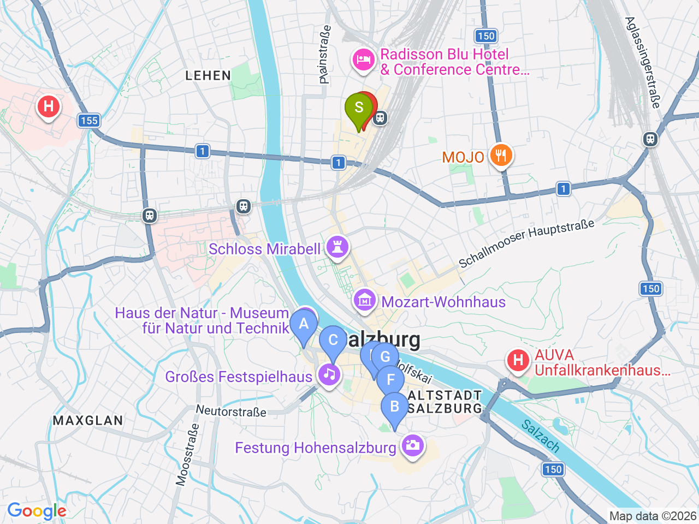

Day 31 · 2026-09-15（二）
奧地利・薩爾茲堡/德國國王湖/維也納 Day 3/9
薩爾茲堡老城精華：山頂稜線散步到城堡
Mönchsberg 電梯上稜線走到 Festung Hohensalzburg，午後 Café Tomaselli 老咖啡館與主教座堂
⏰薩爾茲堡卡24小時卡（€31/人）值不值得買，這天可以估算一下：拿掉DomQuartier後，卡片主要涵蓋 Festung Hohensalzburg 登城纜車+門票（單獨買約€18-19）、Mönchsberg 電梯來回（單獨買約€6）、市區公車、現代美術館；單獨買齊這兩項門票的花費跟卡片價格差距不大，兩者皆可——當天如果還會多搭幾趟市區公車，買卡比較划算，只想爬稜線看城堡的話單獨買票可能還便宜一點；Day30/32不在薩爾茲堡市區，卡片用不到，要買也只買24小時版

彈性探索景點DAY 31
| 地點 | 地點 (英文) | 預計停留(分鐘) | 價格 | 備註 |
|---|---|---|---|---|
| MönchsbergAufzug（電梯上山） | AMönchsbergAufzug Talstation, Salzburg | 約15分鐘 | 含在薩爾茲堡卡內 | 從 Toscaninihof 搭電梯上 Mönchsberg，可眺望老城全景 |
| Mönchsberg 稜線步道 | BMönchsberg, Salzburg | 約30-45分鐘 | 免費 | 沿山脊步道走到 Festung Hohensalzburg，沿途視野很好 |
| Festung Hohensalzburg | CFestung Hohensalzburg, Salzburg | 約90分鐘 | 含在薩爾茲堡卡內 | 歐洲現存最大的中世紀城堡之一，內部展示+城牆景觀都值得，下山可搭 Festungsbahn 纜車 |
| 午餐：Balkan Grill Walter | DBalkan Grill Walter, Salzburg | 約20分鐘 | 見上方三餐資訊 | 站著吃的在地小吃 |
| Café Tomaselli | FCafé Tomaselli, Alter Markt 9, Salzburg | 約45-60分鐘 | 約 €6-12／人 | 1700年開業，奧地利最古老咖啡館，莫札特常客，下午茶時段坐下來休息 |
| 薩爾茲堡主教座堂 | GDom zu Salzburg, Salzburg | 約30分鐘 | 免費（教堂本體） | 巴洛克式主教座堂，莫札特受洗處 |
| 下午茶：Cafe Konditorei Fürst | HCafe Konditorei Fürst, Salzburg | 約30-45分鐘 | 約 €5-10／人 | 1884年老店，正宗原創 Mozartkugel 巧克力球發源地 |
每日三餐
午餐
Balkan Grill Walter（Bosna）Balkan Grill Walter約 €4-6／人
📍 Getreidegasse 33a, Salzburg薩爾茲堡在地名物「Bosna」香腸熱狗發源店，隱身在糧食街往Universitätsplatz的小通道裡，只能站著吃，很快
晚餐
老城區餐廳（自由選擇）約 €15-30／人
老城範圍內選擇很多，逛完一天走到哪算哪即可
住宿資訊
Austria Trend Hotel Europa Salzburg
📍 Rainerstraße 31, 5020 Salzburg